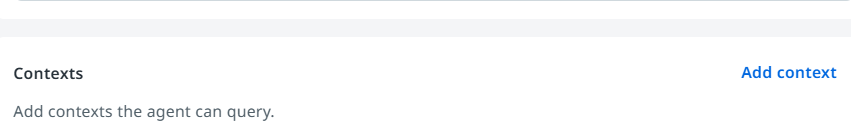
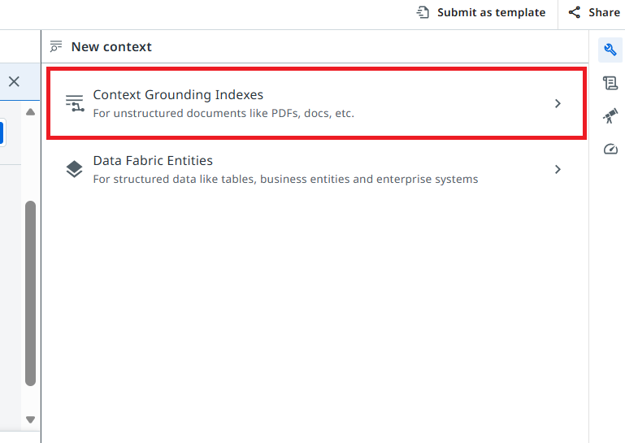
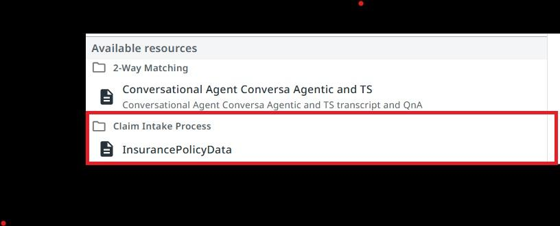
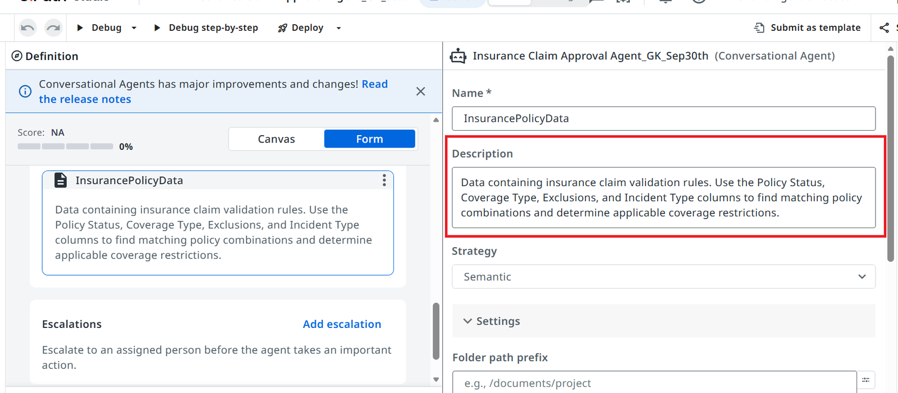
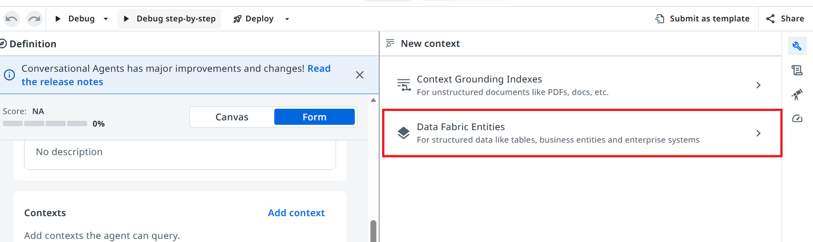
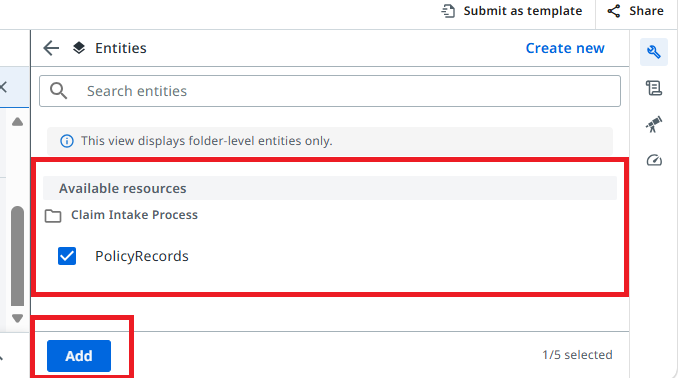
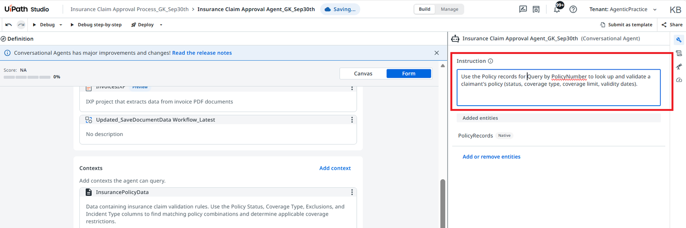

Context Grounding
Contexts are read-only sources of truth the agent can query mid-conversation without a dedicated tool call per lookup. You will add two: a Context Grounding index (InsurancePolicyData, the coverage rules) and a Data Fabric entity (PolicyRecords, the policy master data).
Add the InsurancePolicyData index
Scroll to the Contexts card and click Add context.

In the New context panel choose Context Grounding Indexes (for unstructured documents such as PDFs). The other option, Data Fabric Entities, is for structured tables and is used next.

Under Available resources, open the folder Claim Intake Process and select the index InsurancePolicyData.

Keep the name InsurancePolicyData, leave Strategy on Semantic, and type the description below.
Data containing insurance claim validation rules. Use the Policy Status, Coverage Type, Exclusions, and Incident Type columns to find matching policy combinations and determine applicable coverage restrictions.
InsurancePolicyData from the Claim Intake Process folder.Add the PolicyRecords entity
Click Add context again and this time choose Data Fabric Entities.

In the entities panel tick PolicyRecords (folder Claim Intake Process) and click Add.

Under Added entities, open PolicyRecords and type this instruction so the agent knows when to use it:
Use the Policy records to query by PolicyNumber to look up and validate a claimant's policy (status, coverage type, coverage limit, validity dates).
PolicyRecords.